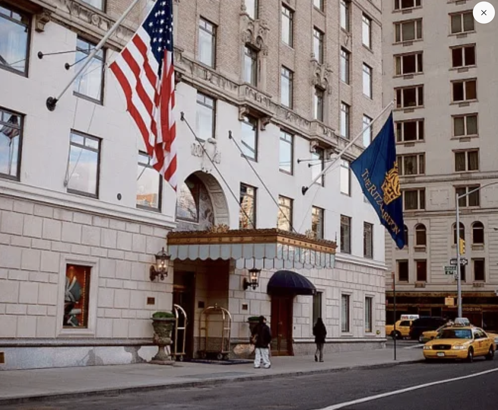
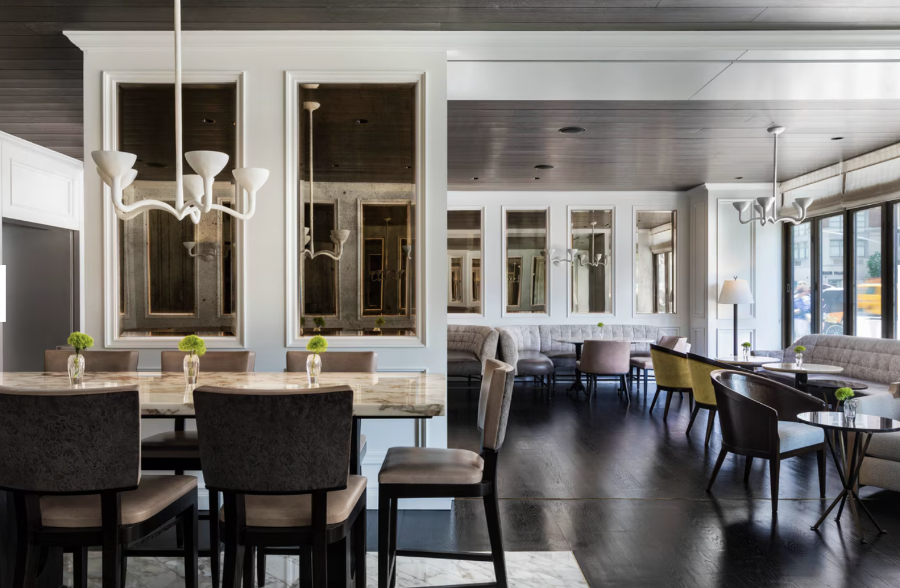
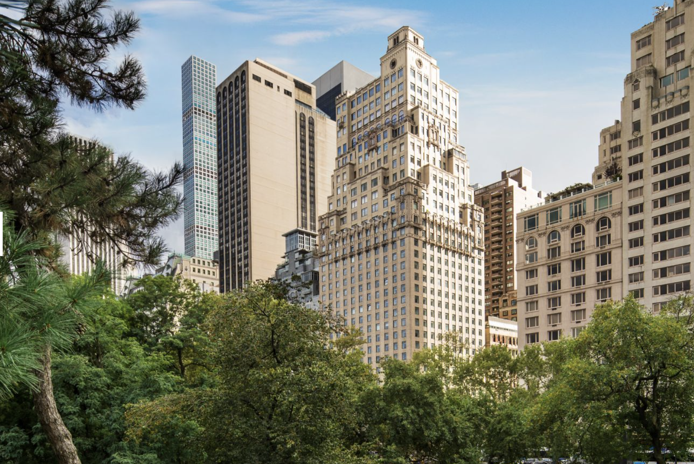
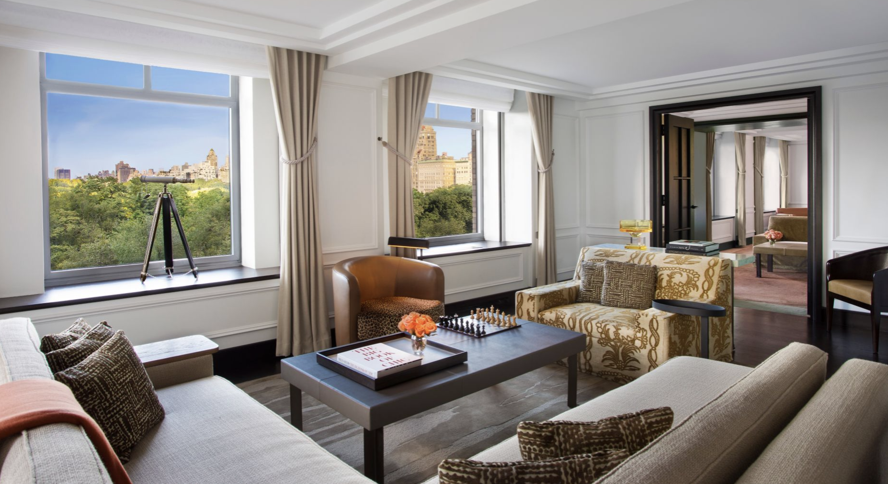
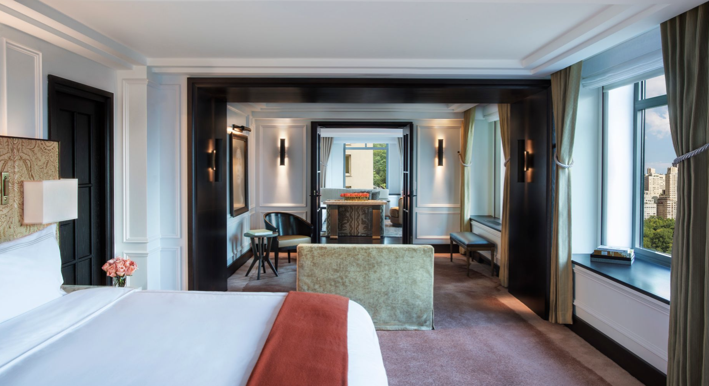

Favorite Hotels
The Ritz-Carlton New York, Central Park is a really good fit when someone wants classic luxury and a more clubby feel.
This is one of those hotels that works well for clients who want Central Park right there, a more traditional luxury experience, and the comfort of a brand people already trust. It is not the most design-driven hotel in the city, but it does a lot of things right and it feels dependable in a good way.
What makes it unique
It is one of the easiest luxury park-side stays to recommend when comfort and smooth service matter more than scene.
Some New York hotels win on buzz. Ritz wins because it makes the whole trip easier for the right client. Central Park is right there, the service rhythm is familiar, and the hotel feels reliable for families, traditional luxury travelers, and anyone who wants the stay to run cleanly from arrival to checkout.
Best For
Classic Central Park South
Really good for clients who want comfort, service, and a reliable luxury brand with park access.
Known For
Club feel and suite strength
Contour, Club Lounge access, and larger signature suites do most of the heavy lifting.
Stay
253 rooms
A more residential-feeling classic hotel with meaningful suite options for families and longer trips.
Client Type
Traditional luxury travelers
Strong for families, repeat Ritz guests, and anyone who wants New York to feel easy and well handled.



The overall setup
Officially, this is a 253-room hotel, and it leans into a classic New York townhouse style with a more residential feel than a flashy modern tower. That usually works really well for clients who want polish and predictability.
Room sizes and suites
The hotel’s real standouts are the signature suites. The Royal Suite and the Presidential Suite are both about 2,175 square feet and come with big living and dining areas, strong Central Park views, and the kind of layout that feels good for families or longer stays. The Artists’ Gate Suite is another notable one if the client wants entertaining space, with two living rooms, a billiards room, dining area, and big windows overlooking the park and Sixth Avenue.


Restaurants and bars
The main food and drink anchor is Contour Gastro Lounge and Bar. It is an all-day spot, which I like because it makes the hotel easy. Morning coffee can turn into lunch, and after-work drinks can become dinner without needing to overthink it. For the right client, the Club Lounge is also part of the draw because it adds that extra hotel-within-a-hotel feeling with a dedicated concierge and food presentations throughout the day.
Who it is best for
- Clients who want a classic luxury brand with a strong service reputation
- Families who want bigger suite options near the park
- Travelers who will actually use Club Lounge access
- People who want Central Park South without needing something overly trendy
My honest take
The Ritz is a strong recommendation when someone wants comfort, brand recognition, and a more traditional luxury rhythm. It may not be the coolest hotel in the city, but it is absolutely one of the safer high-end picks when I want a trip to feel easy.